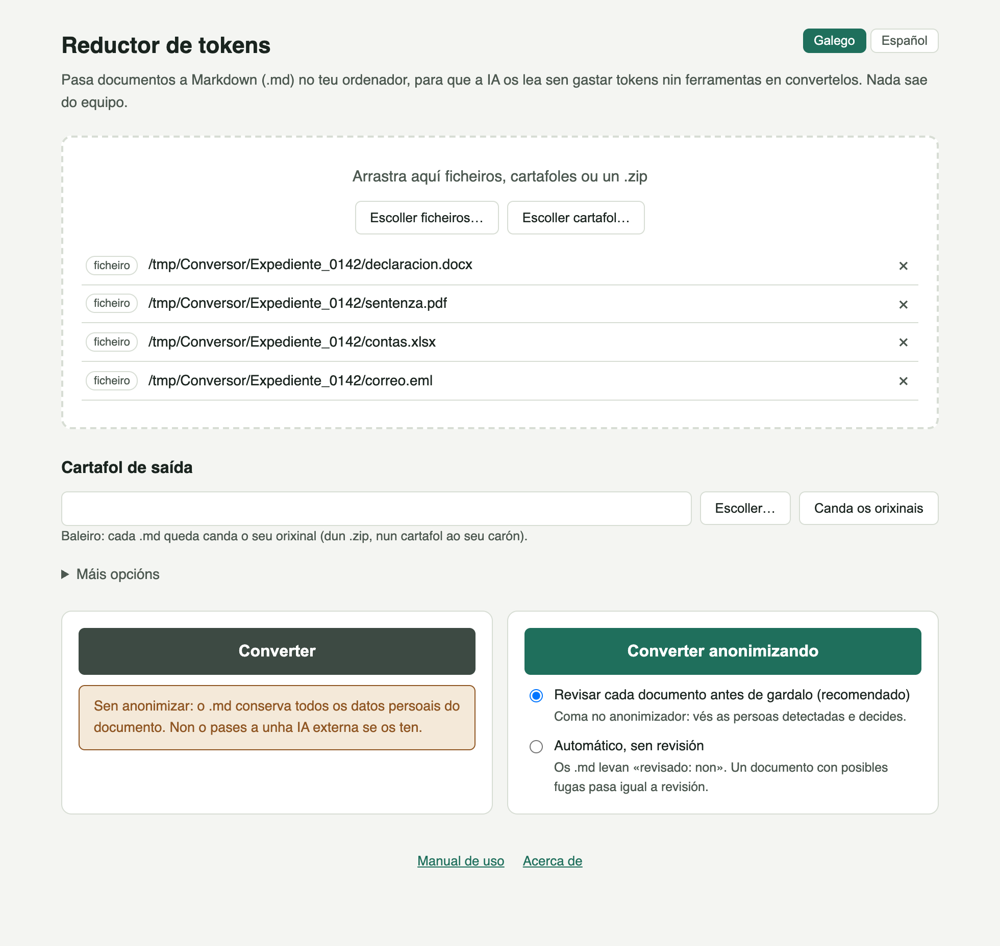
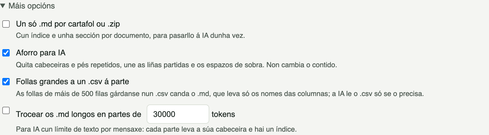
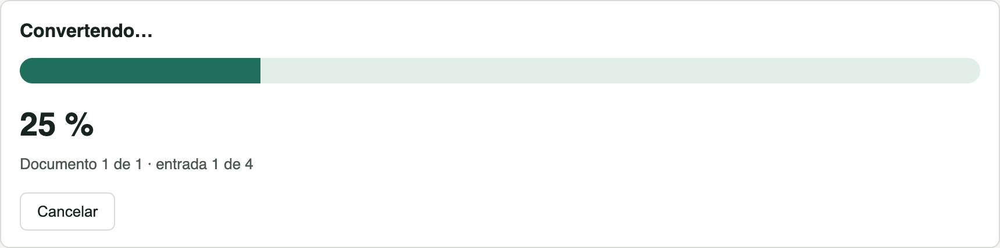
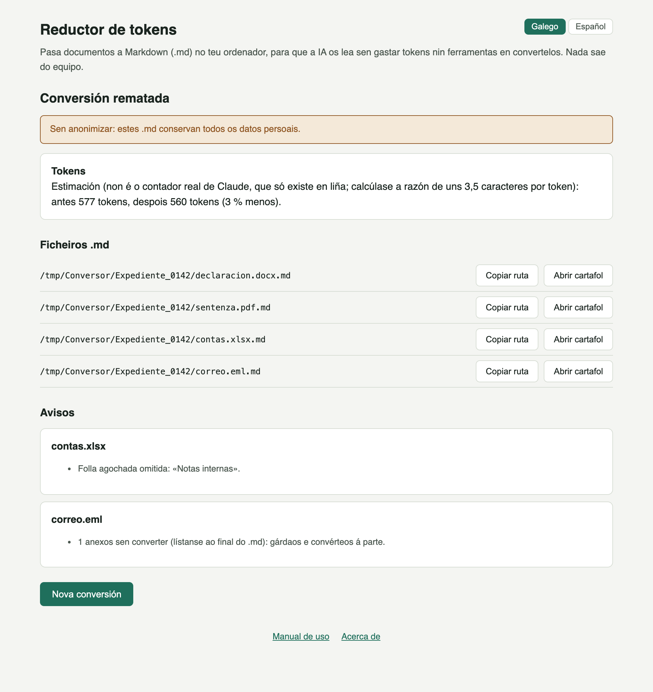
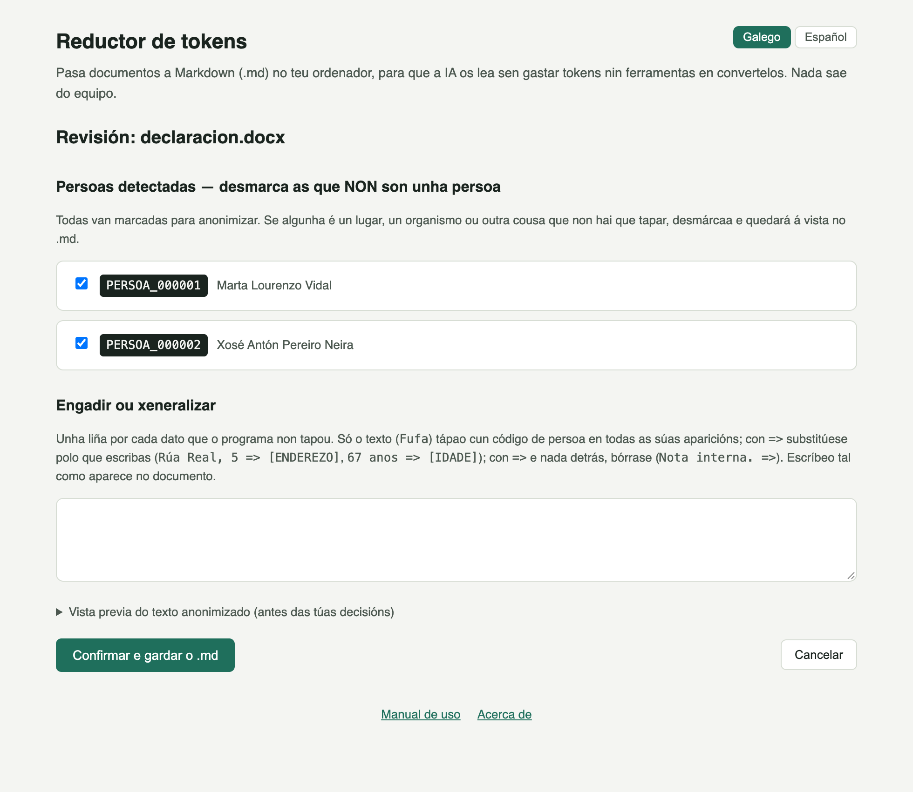
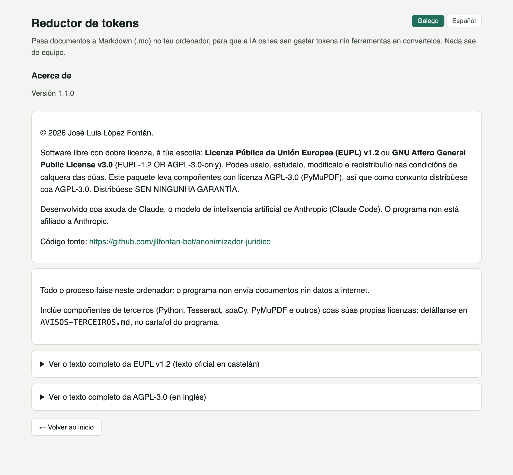

Guía práctica do programa, con capturas reais de cada pantalla (con datos inventados): como escoller os documentos, que opcións hai para gastar menos tokens, que leva cada .md e como convertelos anonimizando, coa mesma revisión ca o Anonimizador jurídico.
Se lle das un PDF ou un Word a unha intelixencia artificial (Claude, ChatGPT, Copilot…), gasta tokens e ferramentas en convertelo a texto, e ás veces leo mal: cabeceiras repetidas en cada páxina, liñas cortadas, táboas desfeitas. O programa fai esa conversión no teu ordenador e garda un ficheiro .md (Markdown) co texto limpo, cos seus títulos, listas e táboas, listo para pasarllo á IA.
Menú Inicio de Windows → Reductor de tokens. O programa ábrese nunha xanela propia; para pechalo, pecha esa xanela. Non se conecta a internet nin abre ningún porto no ordenador: a xanela chama directamente ao programa.

Escolle os documentos
Arrástraos á xanela ou usa «Escoller ficheiros…» e «Escoller cartafol…». Podes mesturar ficheiros, cartafoles enteiros e ficheiros .zip; cada un aparece na lista co seu tipo e cunha × para quitalo.
Cartafol de saída (opcional)
Baleiro, cada .md queda canda o seu orixinal (o dun .zip, nun cartafol ao seu carón). Con «Escoller…» podes mandalos todos a outro cartafol; «Canda os orixinais» volve ao comportamento por defecto.
Preme «Converter»
O documento orixinal nunca se modifica. O ficheiro novo leva o mesmo nome co engadido .md: sentenza.pdf → sentenza.pdf.md, de modo que un .pdf e un .docx co mesmo nome non se pisan.
Converter sen anonimizar conserva todos os datos persoais do documento (nomes, DNI, enderezos…), e o programa avísao nas dúas pantallas. Se pasas ese .md a unha IA en liña, eses datos saen do equipo. Para documentos con datos de terceiros, usa «Converter anonimizando» (sección 06).

.zip, xunta todos os documentos nun só ficheiro (expediente.md, cun índice ao principio): cómodo para pasarlle á IA un expediente enteiro dunha vez..md: gárdanse nun .csv canda el, e o .md leva só os nomes das columnas e a ruta do .csv. A IA le o .csv só se o precisa, e así o .md gasta moitos menos tokens. Non se aplica ao anonimizar.
.md dun tamaño máximo en tokens (por exemplo 30.000), cun índice: útil cando a IA ten un límite por mensaxe.

.md. Non é o contador real da IA, que só existe en liña, pero serve para comparar.Unha cabeceira mínima (poucos tokens, útil tamén para a IA) e o texto con marcas de Markdown: # para os títulos, táboas con | e unha marca de páxina nos PDF. Por exemplo, a primeira páxina dunha sentenza en PDF:
--- orixe: sentenza.pdf paxinas: 3 anonimizado: non convertido: 2026-10-31, Reductor de tokens 1.1.0 --- <!-- cabeceiras e pés de páxina --> XULGADO DE PRIMEIRA INSTANCIA N.º 2 DE LUGO <!-- páxina 1 --> # SENTENZA 214/2026 ## ANTECEDENTES DE FEITO Xulgado de Primeira Instancia. Notificación. Por medio da presente comunícase…
A cabeceira do xulgado, que se repetía en cada páxina, aparece unha soa vez ao principio. Nos documentos dixitalizados o texto é o que le o recoñecemento de texto (OCR), con algún erro posible.
O botón «Converter anonimizando» usa o mesmo motor ca o Anonimizador jurídico: os nomes, DNI, teléfonos, enderezos e demais datos persoais pasan a códigos (PERSOA_000001, [TELEFONO]…) antes de escribir o .md. Usa tamén o mesmo rexistro cifrado (Documentos\Anonimizador), de modo que unha persoa recibe o mesmo código nos dous programas.
Revisar cada documento (recomendado, por defecto)
Antes de gardar cada .md aparece a pantalla de revisión, coma no anonimizador: as persoas detectadas (desmarca as que non son unha persoa) e un recadro para tapar o que se escapase ou xeneralizar un dato.

Ou automático, sen revisión
Para lotes grandes. O programa lembra a túa escolla. Cada .md leva revisado: non na cabeceira, o resultado resume as persoas marcadas, e un documento con posibles fugas pasa igual pola revisión.
O .md anonimizado chámase <nome anonimizado>.anonimizado.<extensión>.md e leva anonimizado: si na cabeceira:
--- orixe: declaracion.docx anonimizado: si revisado: si convertido: 2026-10-31, Reductor de tokens 1.1.0 --- Declaración de PERSOA_000001 PERSOA_000001, con DNI PERSOA_000001 e teléfono [TELEFONO], veciña de Lugo, declara que coñecía a PERSOA_000002 desde había dez anos…
Revisa sempre o .md antes de pasalo a unha IA externa. Mentres se conserve o rexistro, o resultado está seudonimizado, non anonimizado de forma irreversible: a correspondencia entre cada código e a persoa real pódese consultar co Anonimizador jurídico (reversión con contrasinal e motivo).
| Formato | Sen anonimizar | Anonimizando |
|---|---|---|
| PDF con texto e escaneados (OCR) | Si, con títulos, táboas e páxinas | Si |
.docx, .odt, .txt | Si, con títulos, listas e táboas | Si |
Imaxes (.jpg, .png, .tif…) | Si, o texto que le o OCR | Si |
Follas de cálculo (.xlsx, .ods, .csv) | Si, cada folla coma táboa; as agochadas, fóra e con aviso | Aínda non |
Presentacións (.pptx, .odp) | Si, diapositiva a diapositiva, coas notas do orador | Aínda non |
Páxinas web gardadas (.html) | Si, sen menús nin pés da web | Aínda non |
Correos gardados (.eml) | Si: asunto, remitente e destinatarios, data, texto e lista de anexos (os anexos convérteos á parte) | Aínda non |
Cartafoles e .zip | Si, cada documento de dentro | Si, os formatos que admite |
«Aínda non»: eses formatos teñen sitios onde se esconden datos (comentarios, follas agochadas, cabeceiras dun correo…) e só se converterán anonimizando cando cada un teña as súas propias probas de fugas. Mentres, no modo anonimizado quedan fóra, listados coma omitidos.
.md saen a internet, e o programa non abre ningún porto.Documentos\Anonimizador (o mesmo cartafol ca o anonimizador) gárdase preferencias.json (idioma e modo de revisión) e, só se convertes anonimizando, o rexistro cifrado datos_rexistro, coa clave no Administrador de credenciais de Windows. Nada diso se borra ao desinstalar: sen o rexistro non se podería saber a quen corresponde cada código.
| Pregunta | Resposta |
|---|---|
| Por que Markdown e non texto simple? | Porque conserva a estrutura (títulos, listas, táboas) con moi poucos caracteres, e as IA lena moi ben. Un PDF ou un Word costan moitos máis tokens por converter. |
| O .md ocupa o mesmo ca o texto do orixinal? | Algo menos co «Aforro para IA», sobre todo nos PDF con cabeceiras e pés repetidos. O resumo final dá a estimación de tokens antes e despois. |
| Que pasa se convirto o mesmo documento dúas veces? | Sobrescríbese o .md anterior. Anonimizando, a mesma persoa recibe o mesmo código. |
| O programa le os .md que xa xerou? | Non: os .md doutras conversións e os documentos .anonimizado do anonimizador quedan fóra, listados coma «resultado dunha conversión ou anonimización anterior». |
| Os anexos dun correo convértense? | Non: o .md do correo lista os anexos co seu nome e tamaño, e un aviso lémbrache gardalos e convertelos á parte. |
| Podo cambiar o idioma? | Si, cos botóns «Galego | Español» de arriba á dereita. Lémbrase ao pechar o programa e cambia tamén as etiquetas da cabeceira dos .md. |
| Necesito o Anonimizador jurídico? | Non para converter: os dous programas son independentes. Para consultar a identidade real detrás dun código (reversión), si. |